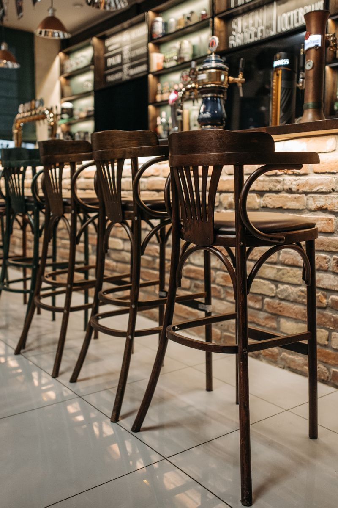

Über uns
Vier Generationen unter der alten Linde
1896 hat Urgroßvater Johann hier die ersten Krüge ausgeschenkt. Seitdem steht die Linde im Hof – und die Familie in der Küche.
Gekocht wird, was die Region hergibt: Fleisch vom Metzger im Ort, Kartoffeln vom Nachbarhof, Bier aus kleinen Brauereien. Ehrlich, deftig und mit Zeit.
Bei uns geht keiner hungrig heim.